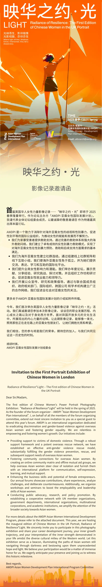
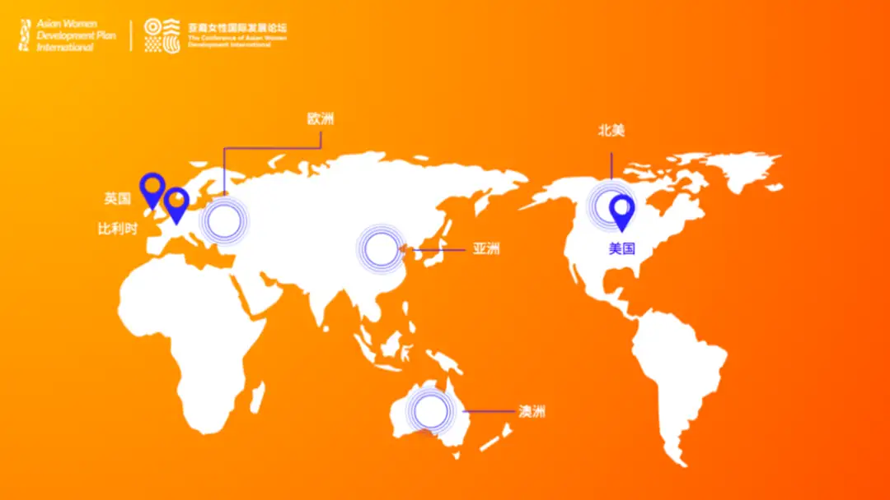

映华之约·光
Radiance of Resilience: The First Edition of Chinese Women in the UK
光映苍生，影伴暗像，光影相随，亦伴亦生
Where light shines, shadows follow;
Intertwined, they tell a shared story.
✦
✦
主办方/策展方
✦
AWDPI亚裔女性国际发展计划
Asian Women Development Plan International
时间
2025 春季

2025AWDPI亚裔女性国际发展计划即将启动 首届华人女性影像记录。首届展览将以华人女性为主题，展示在英工作，生活的华人女性的精神世界以及生活方式的全方位体现。影像记录分为光与影两大主题，将以华人不同视角阐释女性内心的坚韧，笃定，纯净，正直，柔美，果断，坦然和明媚的内心力量的展示。影像记录将以访谈的形式，对在华的不同领域、行业、年龄阶段的女性进行采访，以对答的形式，深入浅出的描绘经历不同人生阶段的她们，如何踏上独属于她们的旅行，如何在寒夜中坚定前行、永不回首，如何在不断挑战自我，战胜恐惧后，怀揣强大的内心，走到明媚的阳光之下的。有人说过：人生就是用漫长漫长而又寒冷的前行，换来一个瞬间的高光时刻。她们又是在怎样的等待和煎熬中，走到自己人生的高光时刻的呢？敬请期待亚裔女性国际发展计划的首届女性影像记录，她将用影像 的形式，生动的讲述她们的内心世界，以及与西方职场、生活中所碰撞出的新的生命的火光。
2025AWDPI亚裔女性国际大展计划的首届华人女性影像记录启幕。本届论坛将围绕“力量-光”“暗夜-影”两大主题，与英国各地的亚裔女性共同探讨人生不同阶段的旅程，分享她们如何坚定前行，并在面对压力与动荡时如何稳定内核。AWDPI将在第二期，影·记录中涉及女性生活中面临的家庭暴力，职场暴力以及冷暴力等尖锐话题，展示在坚韧和寒夜中前行的女性力量。两场摄影展凝聚了探索，思考，应对和保护等方面的探讨和思考，帮助女性更加坚定的直面生活和工作中的种种挑战，并在不断的自我迭代中，获得新生。
✦
✦
第二批影像记录对象招募
✦
亚裔女性国际发展计划，将以影像记录 的形式向在英华人展现她们成长和内心的成长。组织积极向公众招募摄影对象，对于有兴趣，有意向加入影像记录，并且愿意分享她们生活和心路历程的华人女性，组织十分欢迎大家的加入。意愿个人可以联系主办方，领取申请表格，填写首轮影像记录嘉宾意向书，填写个人的基本信息，表格会涉及一些问题的回答和探讨，将通过初筛和复审的方式确定组织第二轮影像记录嘉宾，并在取得嘉宾同意后以访谈的形式进行记录。影像记录将以棚拍的形式进行，对于嘉宾进行一到两组、10张左右的照片采集，并且附于文字编辑。所有的嘉宾影像资料和文字资料，会以摄影手册的形式，在影展当天展示。
招募对象：华人女性
招募条件：在英生活，工作的华人或华裔女性
人数：15-20 人
年龄：无年龄限制
联系方式：亚裔女性国际发展计划 AWDPI （请发邮箱到组织，领取表格填写，专业人员会及时跟进表格，以及初审和复审的所有进展和细节）
Asian Women Development Plan International
Email: [email protected]
人生是一场体验，也是一场场的经历。欢迎大家踊跃加入我们，共享人生。
本次采访与展示均严格遵循嘉宾隐私保护原则。所有采访内容均事先征得嘉宾同意，并在必要情况下对受访者信息进行匿名处理，以确保隐私安全。我们承诺尊重并保护每一位参与者的个人信息，所有的资料的使用仅限于本次项目活动，不会用于其他用途。
✦
✦
主办方介绍
✦
AWDPI亚裔女性国际发展计划 （Asian Women Development Plan International）是一家国际公益组织，致力于消除针对海外亚裔女性的歧视和性别暴力，促进两性平等，并从更多方面促进亚裔女性的身心发展，赋能以及个人各方面的发展，使得海外亚裔女性在社会，经济，文化，教育等方面获得发展，帮助她们从弱势群体成长为推动社会进步的重要力量。
AWDPI在欧洲，北美和亚太的多个国家与地区开展工作，并在英国，比利时和美国设立国家办公室，与各界建立广泛的合作网络，其中包括联合国系统组织，各国政府相关部门，国际组织，跨国公司以及学术机构等。

✦
✦
赞助商及合作伙伴招募
✦
AWDPI诚挚欢迎赞助商、合作伙伴以及对中英文化友好交流感兴趣的群体加入。我们期待与关注华人女性群体、致力于推动在英华人女性发展、消除性别不平等以及关注家庭暴力议题的个人、组织和企业携手合作。若您有意赞助我们的线下活动或支持组织发展，请随时与我们联系。让我们携手共进，共同推动性别平等。
主办方/策展方:
AWDPI亚裔女性国际发展计划
Asian Women Development Plan International
Email: [email protected]
联系我们：
网站：awdpi.org
Email: [email protected]
供稿｜AWDPI英国办公室
排版/封面｜胡潇予